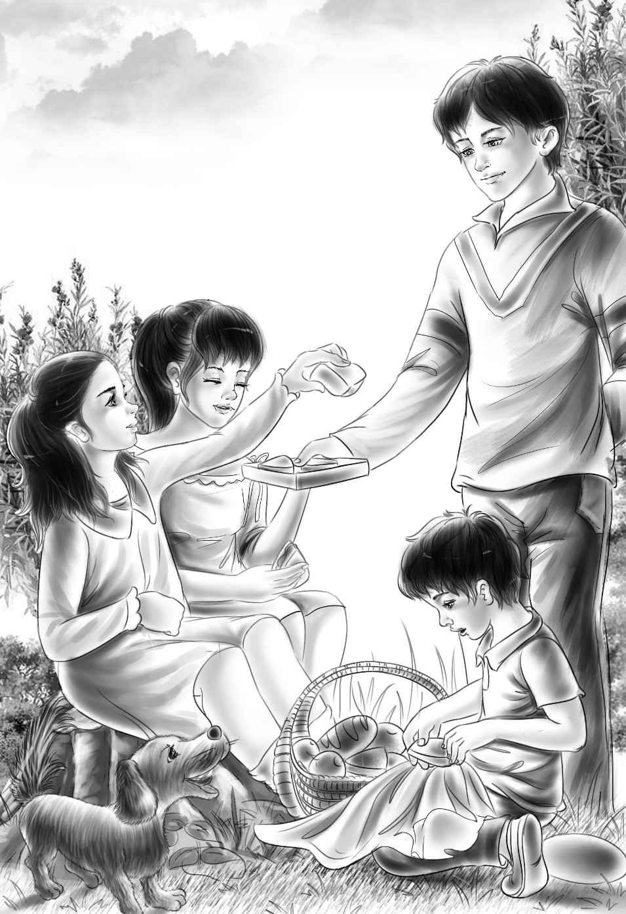

The Yellow Stones
四个孩子现在又聚齐了，整天都很开心。简姑婆似乎也一天天地好了起来。
一天早上，杰西听到姑婆在叫她。
“我想见见你们大家，”简姑婆告诉杰西，“趁我还不累，把他们几个都叫来吧！”
几分钟后，四个孩子都坐到了姑婆的房间里。望望趴在杰西的脚下，脑袋贴着爪子。它一动不动，只有眼睛滴溜溜地转。
“现在我要你们给我听好了，”简姑婆挨个儿看着孩子们，郑重其事地说，“我要宣布一件大事。”
孩子们从来没有这么安静过。他们老老实实地坐在那里，等着她继续说。
“我要把农场送给你们四个。别，先别说话！我只有你们四个亲人，而且你们都是好孩子，对我也不错。”
孩子们惊讶得一句话也说不出来。
“我知道你们还小，没法独自打理农场，”她说，“所以我会让山姆·威克斯来帮忙，他会替你们管理好农场。庞德先生是我的经纪人，他说这样处理没问题。好了，现在你们有什么话要说吗？”
亨利第一个开口道：“这也太意外了，我们都不知道说什么好呢！简姑婆，这实在是太好了！”
望望走到床边，坐下来，伸出爪子。简姑婆握住它的爪子说：“看得出来，你也觉得这主意不错。如果望望觉得可以，我就相信一定错不了。”
她拍了拍望望，继续说道：“从现在起，农场就是你们的了。只要庞德先生把文件带过来，我在上面签字就行了。我要把农场转给真正喜欢它的人，才不会卖给那三个怪人呐！”
四个孩子轻轻对姑婆道了谢，离开了卧室。
“关于这件事，我唯一不满意的地方就是爷爷。”班尼一下子躺倒在草地上。
“你说得不对，小家伙，”亨利说，“我知道你是什么意思——简姑婆把爷爷撇在外面了。”
“我相信总有一天简姑婆会喜欢爷爷的，”维莉说，“爷爷也会喜欢简姑婆。”
“但愿如此。”杰西说。
他们坐在草地上，看着自己的农场。一条小路从后门通到风车旁边，延伸到马厩，再一直通向公路。他们能看到远处的树林和山脉。从他们坐的地方望去，还能看到长长的鸡舍。
“简姑婆说的那三个怪人会是谁呢？”亨利问道。
“那三个人是趁我们去买东西的时候来的，”维莉说，“他们想让姑婆把农场卖给他们。”
“姑婆肯定很需要钱，”亨利说，“可她并没有卖掉农场，而是转给了我们，不知道会不会后悔。”
班尼若有所思地说：“我觉得咱们应该四处转转，既然是咱们的农场，就得赶紧熟悉一下地形。”
杰西说：“对，今天就行动吧！不过要先问问简姑婆，我们该从哪儿熟悉起。”
孩子们向简姑婆请教时，这位坏脾气的老太太心里高兴极了，这么多年来，还从没人跟她请教过问题呢。
“首先你们要记住，千万别迷路。往前走，经过鸡舍，就能看到一片小树林。穿过小树林，有一块开阔的田地，旁边有条小溪，沿着小溪你们就能找回来。”

班尼说：“我们要带上午饭吗，姑婆？”
“那当然。”简姑婆尽力掩饰着自己的笑容。
顶着火辣辣的太阳，孩子们走过鸡舍，来到了清凉的树林里。
“这地方真漂亮。”亨利说。
“顶适合吃午饭呐！”班尼说。
哥哥姐姐都被他逗乐了，不过大家也确实饿了。他们挑了个幽静凉爽的地方坐了下来。杰西正要吃最后一块三明治，突然停住了。
“亨利，你看！”她指着不远处的小茅屋低声说，“那里有间小茅屋。”
亨利迅速站了起来。“门开着，”他说，“屋里好像是空的。”
孩子们慢慢地靠近茅屋。屋里什么也没有，可屋前却有个石头砌成的炉灶，只是被灌木遮掩住了。亨利伸手摸了摸石头，望望闻了一下，摇了摇尾巴。
“咱们得赶紧离开！”亨利说，“有人刚刚在这里生过火，就在不久之前。”
孩子们加快了脚步。很快，他们就走到了一片开阔的空地上，那里到处是大大小小的石块。
“连草都没有，这地方一点也不好！”班尼咕哝道。
“可我觉得这里很美啊！”维莉说，“瞧那些岩石上黄黑相间的条纹。”
“连小石子也是黄色的。”杰西捡起一把小石子，将其中的一块扔到地上，小石子顿时摔成了粉末。
“它好像是由黄沙构成的呢！”亨利说，“多奇怪的石头！”